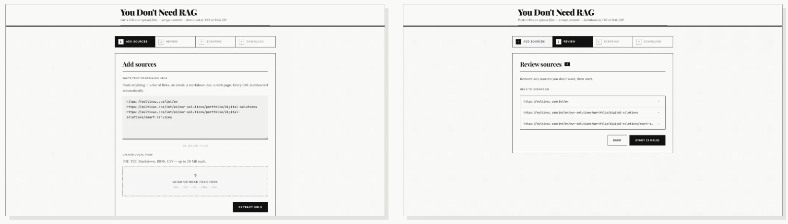

Tool · Knowledge-base export
You Don’t Need RAG
Paste a list of URLs, get one clean text file or a structured RAG-ready ZIP – whichever your knowledge base actually needs. A tool built on a simple bet: most “you need RAG” problems fit in a context window.
Why this exists: RAG has become the default answer to everything
Need to query your docs? RAG. Answer questions about a website? RAG. Give context to a chatbot? RAG. The pattern has real merits – but a long tail of real costs.
| Cost | Why it hurts |
|---|---|
| Chunking is lossy | Splitting documents into fixed-size chunks destroys context that spans paragraphs. The model only sees fragments. |
| Retrieval is imperfect | Embedding similarity does not equal semantic relevance – the model confidently answers from the wrong chunk anyway. |
| Operationally heavy | An embedding model, a vector database, an ingestion pipeline, a retrieval layer – every piece can fail or drift silently. |
| Evaluation is hard | No single obvious quality metric. Hallucinations can trace back to any layer of the stack. |
| Latency adds up | Every query needs an embedding round-trip plus a vector search before the LLM sees a token. |
“The engineering tendency is to reach for the most sophisticated tool available. The complexity was the overhead, not the solution.”
The real fix: modern LLMs already fit the whole knowledge base
GPT-4o, Claude and Gemini 1.5 Pro support 128K to 1M+ token context windows. A 300 KB text file is roughly 75K tokens. No chunking. No retrieval. No pipeline. Just paste.
- Step 1 – scrape the URLs, extract clean readable content
- →
- Step 2 – measure the actual size of the scraped content
- →
- Decision – fits a context window? paste the plain-text file. Genuinely large / live-updating / multi-tenant? export the RAG ZIP.
How it works: four steps, no configuration

01Add sources
Paste anything with links in it – a list, an email, a markdown doc – and every URL is extracted automatically. Local files (PDF, TXT, MD, JSON, CSV) work too.
02Review
URLs and uploaded files are listed separately before scraping starts – nothing runs until you confirm.
03Scrape
The content is scraped and its real size measured.
04Export
Choose plain text or the RAG ZIP, based on the actual content size.
Output: two formats, recommended by actual size
The tool measures the real scraped content and tells you which format fits – it doesn’t make you guess.
Plain Text
knowledge_base.txt – paste directly into any LLM
=== Page Title ===
URL: https://example.com
Scraped: 2026-01-01T00:00:00Z
Full page content here...
---
=== Next Page ===
...RAG ZIP
knowledge_base.zip – ready for an embedding pipeline
knowledge_base.zip
├── manifest.json # id, url, title, char_count
└── pages/
├── example-com-abc123.json
├── example-com-docs-def456.json
└── ...Not anti-RAG: when you actually do need RAG
This tool isn’t anti-RAG; it’s pro-pragmatism. RAG is the right call when:
- Your knowledge base is genuinely large – millions of tokens, not thousands.
- You need sub-second retrieval over a live-updating corpus.
- You want to retrieve across many different users’ private datasets.
- Your queries are specific enough that full-document context would mostly be noise.
“For everything else – try the plain text file first.”
Stack: everything that shipped
| Component | Details |
|---|---|
| Next.js 15 | App Router, React 19 |
| Python scraper | requests, BeautifulSoup, markdownify, pdfplumber |
| File-based jobs | Async scraping jobs in data/jobs/<uuid> |
| Plain text output | Single concatenated .txt, paste-ready |
| RAG ZIP output | manifest.json + per-page JSON via zipfile |
| No vector DB | The point of the project – zero infrastructure by default |